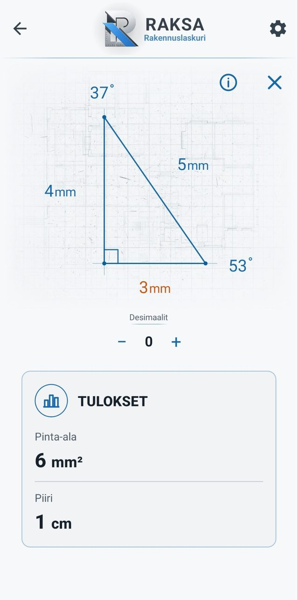

01
Kolmiolaskin
Anna kaksi tunnettua arvoa – kaksi sivua tai sivu ja kulma. Raksa laskee loput sivut, terävät kulmat, pinta-alan ja piirin.
- Kateetit a ja b, hypotenuusa c sekä kulmat α ja β suoraan kolmiokuvassa
- Yksiköt mm, cm, dm, m ja km – yksikön vaihto säilyttää mitan
- 0–5 desimaalia tulosten tarkkuudeksi
- Selkeät virheilmoitukset, esimerkiksi jos hypotenuusa on kateettia lyhyempi
Esimerkki: a = 3000 mm ja b = 4000 mm → c = 5000 mm, α = 36,87° ja β = 53,13°.
